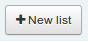
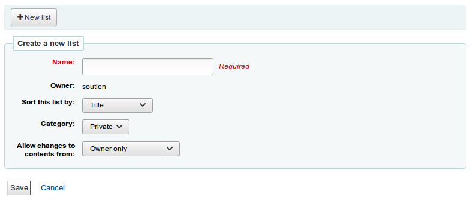
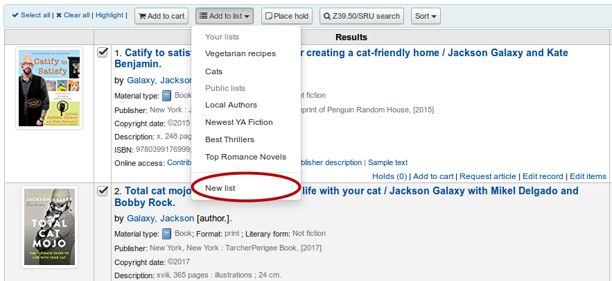
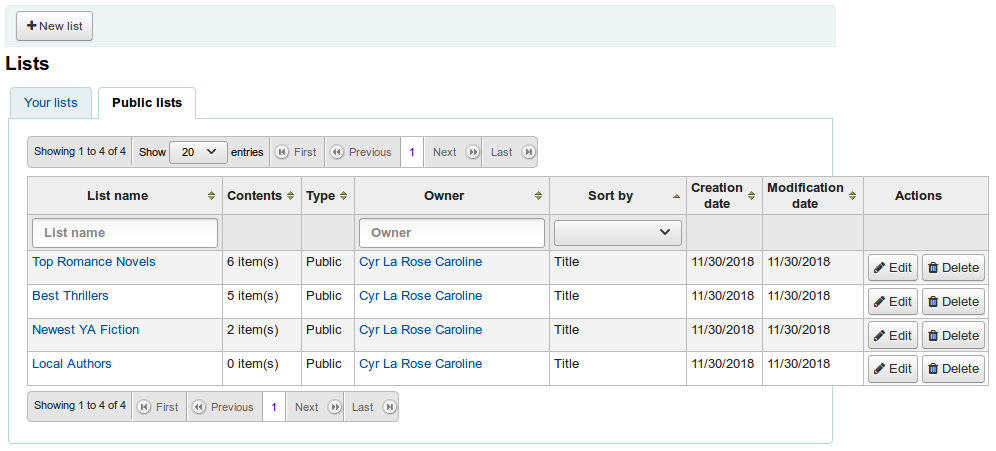
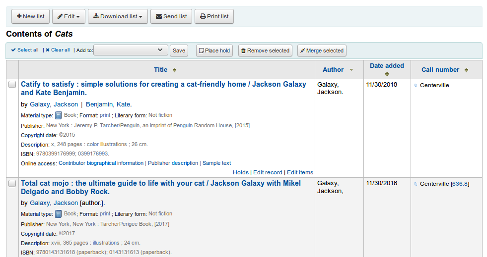
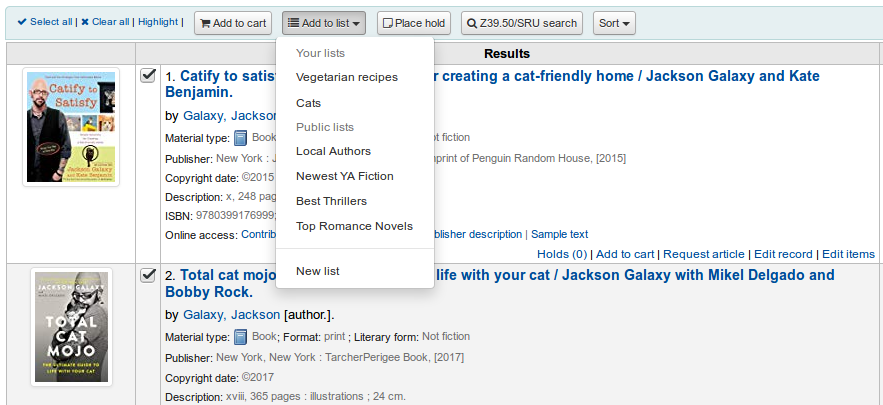
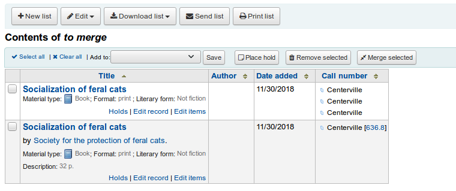
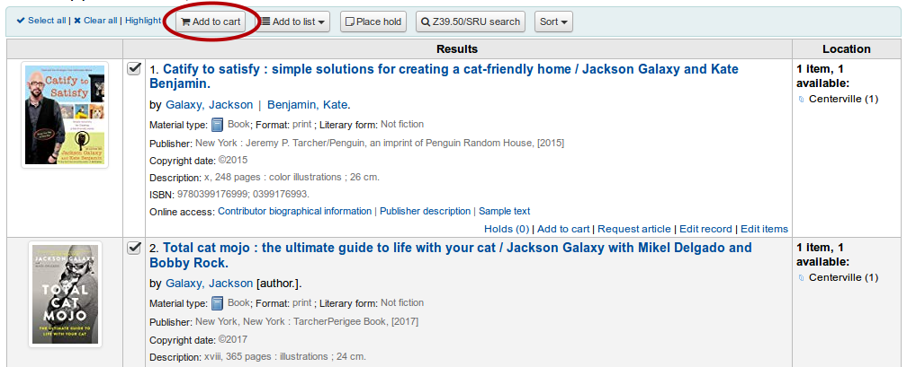
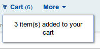
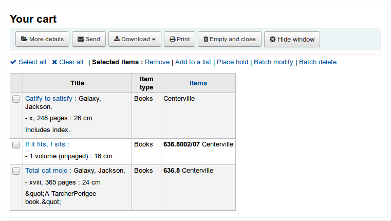

Lists and cart
Lists are a way to save a collection of content on a specific topic or for a specific purpose. The cart is a session specific storage space.
Get there: More > Lists
Lists
Create a list
A list can be created by visiting the Lists page and clicking ‘New list’

The new list form offers several options for creating your list:

The name is what will appear on the list of lists
You can also choose how to sort the list
Next, decide if your list is going to be private or public
A private list can be seen only by you
A public list can be seen by everybody
Finally decide what your permissions will be on the list. You can allow changes to the list from:
Nobody: this will close the list to contributions
Owner only: only you will be able to add or remove items from the list
Anyone seeing this list: other users will be able to add or remove items from the list
A list can also be created from the catalog search results

Check the box to the left of the titles you want to add to the new list
Choose ‘New list’ from the ‘Add to:’ pull down menu

Name the list and choose what type of list this is
A private list can be seen only by you
A public list can be seen by everybody
The list will have the default sort (title) and the default modification permissions (owner only).
Once the list is saved it will accessible from the Lists page and from the ‘Add to’ menu at the top of the search results.
Add to a list
To add titles to an existing list click on the list name from the page of lists

To open a list you can click the list name.
From that page you can add titles by scanning barcodes into the box at the bottom of the page

A title can also be added to a list by selecting titles on the search results page and choosing the list from the ‘Add to’ menu

Viewing lists
To see the contents of a list, visit the Lists page on the staff client
Clicking on the ‘List name’ will show the contents of the list
From this list of items you can perform several actions
‘New list’ will allow you to create another list
‘Edit’ will allow you to edit the description and permissions for this list, or delete this list
‘Download list’ will allow you to download the cart using one of 3 default formats or your CSV profiles
‘Send list’ will send the list to the email address you enter
‘Print list’ will present you with a printable version of the list
You can sort the columns by clicking on the column header.
Merging bibliographic records via lists
One way to merge together duplicate bibliographic records is to add them to a list and use the merge tool from there.

Once you have selected the records to merge together the process is the same as if you had chosen to merge via cataloging.
Cart
The cart is a temporary holding place for items in the OPAC and/or staff client. The cart will be emptied once the session is ended (by closing the browser or logging out). The cart is best used for performing batch operations (holds, printing, emailing) or for getting a list of items to be printed or emailed to yourself or a patron.
If you would like to enable the cart in the staff client, you need to set the intranetbookbag system preference to ‘Show.’ To add things to the cart, search the catalog and select the items you would like added to your cart and click on the ‘Add to cart’ button.

A confirmation will appear below the cart button at the top of the staff client

Clicking on the cart icon will provide you with the contents of the cart

From this list of items you can perform several actions
‘More details’ will show more information about the items in the cart
‘Send’ will send the list to the email address you enter
‘Download’ will allow you to download the cart using one of 3 default formats or your CSV profiles
‘Print’ will present you with a printable version of the cart
‘Empty and close’ will empty the list and close the window
‘Hide window’ will close the window
Modifying bibliographic records via the cart
Bibliographic records can be modified in batch from the records added to a cart. Select the records in the cart you wish to modify and click ‘Batch modify’.
You will be taken to the ‘Batch record modification tool’ and from there the process to modify the bibliographic records is the same as if you had chosen to modify via Tools.